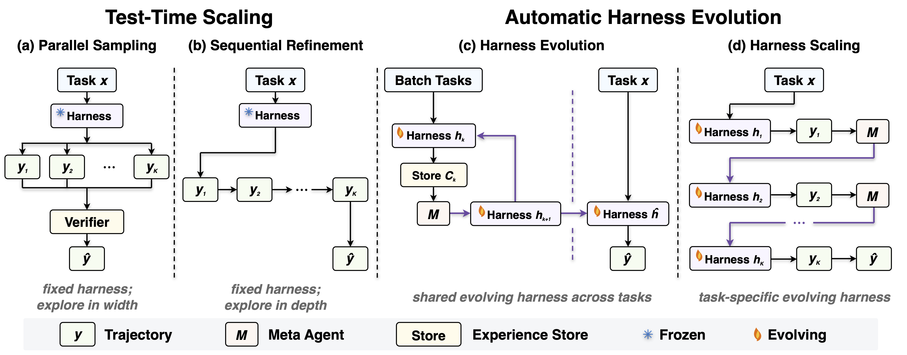

Evolved Harness, or Just More Attempts? Rethinking the Evaluation of Harness Evolution for Agents
TL;DR. Automatic harness evolution is typically evaluated by searching over harnesses with test feedback and then reporting results on the same benchmark. When we instead compare it against simple test-time scaling baselines under matched feedback and inference budgets on Terminal-Bench 2.1, harness evolution fails to beat parallel sampling or sequential refinement, both with or without unit-test feedback, and shows limited generalization to held-out tasks. Much of the reported gain appears to come from repeated sampling and adaptation to the evaluation tasks, not from genuinely better harness design.
LLM agents increasingly rely on external harnesses to interact with complex environments. A harness defines the prompts, tools, memory, verification routines, and control logic through which a model observes tasks and acts. Harness engineering can substantially affect agent performance even with a fixed model, yet it remains largely manual: developers inspect trajectories, diagnose failures, and revise the harness.
This has motivated automatic harness evolution, in which agents improve external harnesses. Systems such as Meta-Harness [1], AHE [2], and AEVO [3] follow a common search loop: analyze prior trajectories, scores, and failures; propose modifications; evaluate them on benchmark tasks; and repeat. Harness evolution is also increasingly discussed as a path toward recursive self-improvement [4]. However, the way harness evolution is evaluated deserves a closer look.
How Is Harness Evolution Evaluated Today?
In many studies, harness search uses verifier feedback from benchmark tasks, and the final harness is then evaluated on the same public benchmark, such as Terminal-Bench [5]. This raises two fundamental concerns.
First, harness evolution is itself an iterative search procedure that repeatedly evaluates and revises candidate harnesses using task feedback. It should be compared with test-time scaling [6] baselines under comparable feedback and inference budgets to determine whether its gains arise from improved harness design or from additional search alone.
Second, the search and the final evaluation share the same benchmark. Observed gains may reflect adaptation to task-specific patterns rather than improvements in harness design that transfer to held-out tasks.
Together, these leave a fundamental question unresolved: does harness evolution yield generalizable improvements in harness design, or are its gains primarily due to repeated sampling?
Four Ways to Spend the Same Budget
We compare four methods under a controlled budget protocol that specifies what feedback each method receives, how it allocates inference compute, and whether it modifies task trajectories or the harness itself. Each method uses a fixed agent policy \(\pi_\theta\) and receives a compute budget \(K\).

- Parallel sampling (fixed harness; explore in width) draws \(K\) trajectories independently from the policy using a fixed harness, \(y_1, \dots, y_K \sim \pi_\theta(\cdot \mid x;\, h)\), and selects the final answer by model self-selection or, when available, by the unit tests [7] [8].
- Sequential refinement (fixed harness; explore in depth) extends the interaction horizon so that each trajectory builds on the previous trajectory and, when available, its verifier outcome [9].
- Harness evolution (shared evolving harness) allocates budget to the harness and optimizes across a task distribution: a meta agent \(\mathcal{M}\) reads the summarized experience store and emits the next harness, \(h_k = \mathcal{M}(\Phi(\mathcal{C}_{k-1}))\). We instantiate it with AHE [2], with its explore agent disabled so that improvements come from evolving the harness on feedback rather than from retrieving benchmark-specific harnesses externally.
- Harness scaling (task-specific evolving harness) is a probe we introduce: the meta agent revises the harness for a single task after each rollout, conditioning on the prior harness and trajectory and, when available, the verifier outcome. This contrasts instance-guided harness adaptation with dataset-guided harness evolution.
All methods start from the same minimal harness: a single bash tool, without skills, middleware, or persistent memory. We evaluate on Terminal-Bench 2.1 with Claude Opus 4.6, GPT-5.4, and GPT-5.4 mini, use \(K = 5\) across methods, and average all results over two independent runs.
1️⃣ Without Unit Test Cases, Automatic Harness Evolution Underperforms Test-Time Scaling
We first consider the setting where unit test cases are unavailable, so the agent must rely solely on its own generated trajectories to revise either its solution or its harness.
| Method | Claude Opus 4.6 | GPT-5.4 | GPT-5.4 mini | Average |
|---|---|---|---|---|
| Direct sampling using initial harness | 69.9 | 75.3 | 59.4 | 68.2 |
| Test-Time Scaling | ||||
| Parallel Sampling | 74.7 | 79.2 | 62.9 | 72.3 |
| Sequential Refinement | 73.0 | 73.0 | 61.8 | 69.3 |
| Automatic Harness Evolution | ||||
| Harness Evolution | 71.4 | 69.7 | 61.3 | 67.4 |
| Harness Scaling | 76.0 | 78.1 | 61.2 | 71.8 |
Results on Terminal-Bench 2.1 without unit test cases. All results report pass@1. Best results in bold.
Parallel Sampling is the most consistent approach, improving the average score from 68.2 to 72.3 with gains on all three models. In contrast, Harness Evolution fails to outperform the direct sampling baseline on average, and on GPT-5.4 the performance drops to 69.7.
Without an external correctness signal, self-generated feedback is noisy, and even very strong agents struggle to extract useful learning signals from their own trajectories to revise the harness. Revision based on such feedback risks compounding early mistakes.
2️⃣ With Unit Test Cases, Automatic Harness Evolution Still Underperforms Test-Time Scaling
We then give every method access to unit test cases, used both as feedback for iterative refinement and as an oracle for selecting the final trajectory. Because oracle selection makes repeated attempts directly comparable, we report both pass@1 and pass@5.
| Method | Claude Opus 4.6 | GPT-5.4 | Average | |||
|---|---|---|---|---|---|---|
| pass@1 | pass@5 | pass@1 | pass@5 | pass@1 | pass@5 | |
| Direct sampling using initial harness | 69.9 | – | 75.9 | – | 72.9 | – |
| Test-Time Scaling | ||||||
| Parallel Sampling | 84.8 | 84.8 | 87.1 | 87.1 | 86.0 | 86.0 |
| Sequential Refinement | 83.1 | 90.4 | 85.4 | 93.3 | 84.3 | 91.8 |
| Automatic Harness Evolution | ||||||
| Harness Evolution | 73.0 | 83.2 | 78.6 | 89.3 | 75.8 | 86.2 |
| Harness Scaling | 83.1 | 89.9 | 82.0 | 88.8 | 82.6 | 89.3 |
Results on Terminal-Bench 2.1 when unit test cases are available. Best results in bold.
All methods improve substantially over direct sampling, but neither Harness Evolution nor Harness Scaling outperforms the simpler baselines: Parallel Sampling achieves the best pass@1 and Sequential Refinement achieves the best pass@5.
If harness revision genuinely produced better harnesses, the improvement should show up in pass@1. Instead, most of the benefit appears when we can select among multiple trajectories. This suggests the gains largely stem from making multiple attempts, an effect that Parallel Sampling and Sequential Refinement achieve more directly, rather than from improved harness design enabling the agent to solve previously unsolved tasks.
3️⃣ Evolved Harnesses Barely Transfer to Held-Out Tasks
Finally, we test generalization directly. We split Terminal-Bench 2.1 into 45 training tasks, 10 validation tasks, and 34 held-out test tasks, run Harness Evolution on the training set with unit test feedback, select the best evolved harness by validation performance, and report pass@1 on the test set.
| Method | Claude Opus 4.6 | GPT-5.4 | Average |
|---|---|---|---|
| Direct sampling using initial harness | 63.3 | 72.1 | 67.7 |
| Harness Evolution | 64.5 (+1.2) | 72.1 (+0.0) | 68.3 (+0.6) |
Pass@1 on held-out test tasks before and after Harness Evolution. Relative gains in parentheses.
The evolved harness yields an average gain of 0.6 points, which stands in sharp contrast to the improvements Harness Evolution produces when evaluated on the same tasks it is optimized on.
The discrepancy suggests task-specific adaptation rather than transferable harness design. When search and evaluation tasks are disjoint, Harness Evolution shows limited generalization and a strong tendency to overfit the search set.
Why Is Harness Evolution Less Effective Here?
While this may simply reflect that current models are not yet capable enough to revise the entire harness, we think the choice of tasks also matters. Agents already achieve relatively high scores on Terminal-Bench, so the remaining failures may stem from limitations in the underlying model rather than deficiencies in the harness. Terminal-Bench may also be relatively insensitive to harness design, since a shell tool and a basic prompt already suffice for most solvable tasks. These observations suggest that future work could explore tasks with substantial headroom and where specialized tools, skills, or workflows are crucial to success.
Takeaways for Evaluating Harness Evolution
- Automatic harness evolution does not consistently outperform simple test-time scaling. Under comparable feedback and inference budgets, Parallel Sampling and Sequential Refinement remain strong and meaningful baselines that harness evolution methods should be compared against.
- Evolved harnesses show limited generalization. When search and evaluation tasks are disjoint, the evolved harness yields only marginal gains on held-out tasks, suggesting that improvements discovered during search may not transfer.
- Better benchmarks for automatic harness design are needed. Future benchmarks should contain tasks with substantial headroom for improvement and where performance depends heavily on the harness.
Our code is available at github.com/rethinking-harness-evolution.
References
- Yoonho Lee, Roshen Nair, Qizheng Zhang, Kangwook Lee, Omar Khattab, and Chelsea Finn. Meta-Harness: End-to-End Optimization of Model Harnesses. arXiv:2603.28052, 2026.
- Jiahang Lin et al. Agentic Harness Engineering: Observability-Driven Automatic Evolution of Coding-Agent Harnesses. arXiv:2604.25850, 2026.
- Jiayi Zhang et al. Harnessing Agentic Evolution. arXiv:2605.13821, 2026.
- Lilian Weng. Harness Engineering for Self-Improvement. Lil'Log, 2026.
- Mike A. Merrill et al. Terminal-Bench: Benchmarking Agents on Hard, Realistic Tasks in Command Line Interfaces. arXiv:2601.11868, 2026.
- Charlie Snell, Jaehoon Lee, Kelvin Xu, and Aviral Kumar. Scaling LLM Test-Time Compute Optimally Can Be More Effective than Scaling Model Parameters. arXiv:2408.03314, 2024.
- Xuezhi Wang et al. Self-Consistency Improves Chain of Thought Reasoning in Language Models. arXiv:2203.11171, 2022.
- Bradley Brown et al. Large Language Monkeys: Scaling Inference Compute with Repeated Sampling. arXiv:2407.21787, 2024.
- Aman Madaan et al. Self-Refine: Iterative Refinement with Self-Feedback. Advances in Neural Information Processing Systems 36, 2023.
Contact Us
Feel free to find more details in the paper. This is still a work in progress; if you have any questions or comments, or notice any issues, contact us at yikewang@cs.washington.edu, tengx@allenai.org, and zhuhs1998@gmail.com. If you found this work helpful, please consider starring the repository and citing us:
@misc{wang2026rethinkingharnessevolution,
title = {Rethinking the Evaluation of Harness Evolution for Agents},
author = {Yike Wang and Huaisheng Zhu and Zhengyu Hu and Yige Yuan and Zhengyu Chen and Shakti Senthil and Hannaneh Hajishirzi and Yulia Tsvetkov and Pradeep Dasigi and Teng Xiao},
journal = {arXiv preprint arXiv:2607.12227},
year = {2026}
}